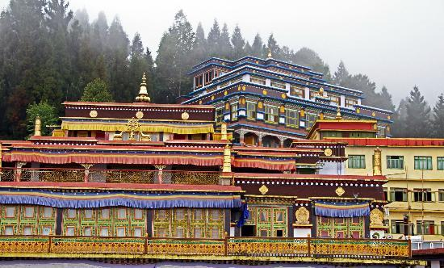

Rumtek monestry

Hanuman Tok is a Hindu temple complex which is located in the upper reaches of Gangtok, the capital of the Indian state of Sikkim. The temple is dedicated to lord Hanuman,and maintained by the Indian army.
Gangtok rose to prominence as a popular Buddhist pilgrimage site after the construction of the Enchey Monastery in 1840. In 1894, the ruling Sikkimese Chogyal, Thutob Namgyal, transferred the capital to Gangtok.

HOW TO REACH ?
Nearest Airport: Gangtok
Nearest Railway Station:Gangtok
Nearest Bus Stand:Gangtok